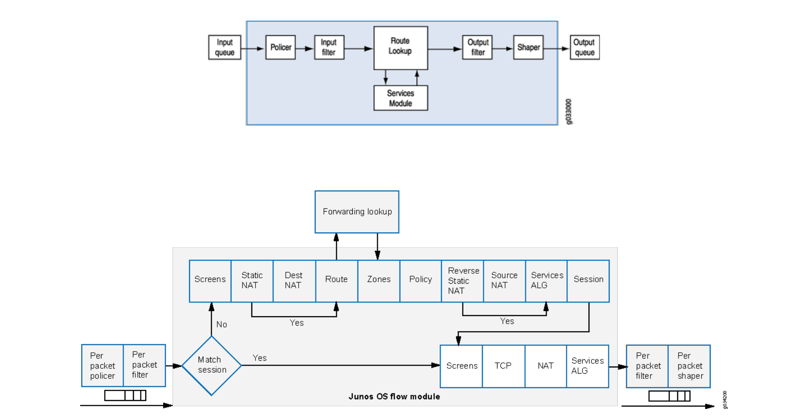

# delete security
# set security forwarding-options family inet mode packet-based
# set security forwarding-options family inet6 mode packet-based
# set security forwarding-options family mpls mode packet-based
> show security flow status
# show filter
family inet {
filter filter-in {
term discard-icmp {
from {
source-address {
1.2.3.4/32;
}
destination-address {
5.6.7.8/32;
}
protocol icmp;
}
then {
reject;
}
}
term permit-others {
then accept;
}
}
}
# show interfaces ge-0/0/9
unit 0 {
family inet {
filter {
input filter-in;
}
address 10.45.28.9/24;
}
}
# show firewall
# show firewall filter <filter-name>
# delete security
# set security forwarding-options family inet mode flow-based
# set security forwarding-options family inet6 mode flow-based
# set security forwarding-options family mpls mode flow-based
> show security flow status
# delete security
# show security zones
security-zone <zone-name> {
interfaces {
<interface-name> {
host-inbound-traffic {
system-services {
<service>
}
protocols {
<protocol>
}
}
}
}
}
# show security policies
from-zone <zone-name> to-zone <zone-name> {
policy <policy-name> {
match {
source-address <src-address>;
destination-address <dst-address>;
application <app-name>;
}
then {
<action>;
}
}
}
# show security flow session
# show security flow session source-prefix <prefix>
# show security flow statistics
# show security policies
# show security policies from-zone <zone> to zone <zone>
RPF je zkratka pro Reverse Path Forwarding (česky Zpětné směrování cestou). Jde o techniku používanou primárně pro zvýšení bezpečnosti sítě a je klíčová pro fungování Multicastu.
Router obdrží IP paket.
Zkontroluje zdrojovou IP adresu (Source IP Address) v hlavičce paketu.
Využije svou směrovací tabulku (FIB), aby určil, kudy by měl paket se stejnou zdrojovou adresou opustit síť, pokud by byl odesílán lokálně.
Porovná toto zjištěné výstupní rozhraní s rozhraním, na kterém paket skutečně přišel (vstupní rozhraní).
Pravidlo: Pokud by nejlepší cesta k dosažení zdrojové IP adresy vedla zpět přes rozhraní, ze kterého paket přišel, RPF kontrola projde (paket je legitimní).
Pokud by nejlepší cesta k dosažení zdrojové IP adresy vedla jinudy (např. ven do internetu nebo přes jiný port), RPF kontrola selže (paket je považován za zfalšovaný/spoofed) a paket je zahozen.
Zabrání IP Spoofingu: Útočníci nemohou předstírat, že pocházejí z adresy, ke které router nemá platnou cestu vedoucí zpět přes daný vstupní port.
Zmírnění DoS/DDoS: Pomáhá zastavit šíření útoků, které používají zfalšované zdrojové adresy (např. útoky typu Smurf).
Router obdrží Multicast paket určený pro skupinu G ze zdroje S.
Zkontroluje zdrojovou IP adresu (S).
Využije svou Unicast směrovací tabulku (FIB), aby zjistil, jaká je nejlepší cesta zpět ke zdroji S.
Pokud paket přišel na rozhraní, které je na nejlepší (nejkratší) cestě ke zdroji S, RPF kontrola projde.
Pokud paket přišel na jiné rozhraní (např. delší nebo vedlejší cesta), RPF kontrola selže (indikuje smyčku nebo neoptimální tok) a paket je zahozen.
Bezsmyčkové Šíření: RPF zajišťuje, že Multicast provoz teče pouze po jedné, optimální cestě, čímž se zabrání nekonečným smyčkám.
Vytvoření Distribučního Stromu: RPF definuje cestu od zdroje (Source Path) a tím pádem i kořen (Root) distribučního stromu, což je klíčové pro všechny Multicast směrovací protokoly.
# show interface ge-0/0/9
ge-0/0/9 {
unit 0 {
family inet {
rpf-check;
address 12.34.56.78/29;
}
}
}
# show interface ge-0/0/9 extensive